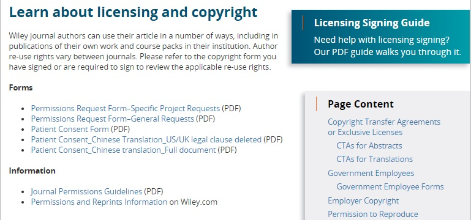
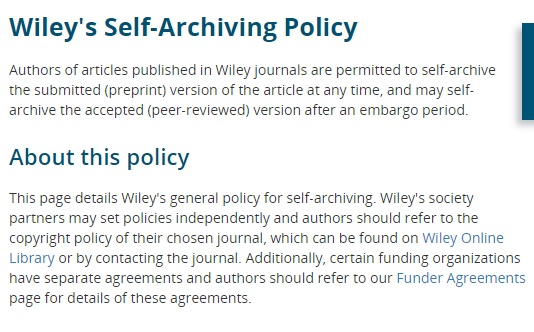

#OpenAccessWeek - Pengalihan Hak Cipta (Copyright Transfer Agreement) Ciptaan vs Pelisensian Ciptaan

Open Access Week

Artikel ini merupakan bagian dari agenda Pekan Keterbukaan Akses Internasional 2018 (Selanjutnya disebut dengan PKAI atau PKAI 2018). PKAI 2018 merupakan serangkaian upaya untuk meningkatkan kesadaran tentang prinsip open access atau gerakan keterbukaan publikasi karya ilmiah di ranah daring. Tahun ini, PKAI mengangkat tema “Designing Equitable Foundations for Open Knowledge” (bahasa Inggris) atau Merancang Pondasi Pengetahuan Terbuka Yang Berkeadilan. Tema ini dibuat untuk mengajak para pemangku kepentingan terkait agar dapat sama-sama merumuskan peran gerakan open access dalam isu keberagaman, keadilan, dan inklusifitas. Tiga unsur tersebut perlu dikaji lebih lanjut agar akses keterlibatan pemangku kepentingan dapat berjalan lancar dan distribusi pengetahuan terbuka dapat terlaksana secara berkelanjutan. Anda dapat turut serta berkampanya dengan mengikuti petunjuk-petunjuk di situs web ini.
Pemajuan prinsip ini menjadi hal yang penting karena kebutuhan akses terhadap ilmu pengetahuan dari seluruh penjuru dunia semakin meningkat seiring berkembangnya teknologi pengaksesan informasi. Hal ini membuktikan bahwa, model penyediaan ilmu pengetahuan secara tertutup yang mengenakan biaya mahal dan keterbatasan penggunaan serta penyebaran kembali oleh pengakses maupun pencipta sudah bukan lagi menjadi hal yang relevan. Untuk itu dibutuhkan ekosistem ketersediaan ilmu pengetahuan yang terbuka bagi lebih banyak orang, tidak hanya untuk para ilmuwan, sambil menetapkan beberapa pembatasan yang masuk akal sebagai model bisnis, strategi diseminasi, dan infrastruktur penerbitan karya ilmiah daring. Maka dari itu, kini, hampir setiap saat, ide-ide mengenai pewujudan sistem baru tersebut, terus dikumpulkan, diolah, dan diupayakan.
Pengalihan Hak Cipta
Hak cipta atas suatu ciptaan pada umumnya dipegang secara eksklusif oleh pencipta seketika ciptaan diwujudkan dan diumumkan. Kontrol eksklusif dari hak cipta memastikan setiap manfaat ciptaan dapat dirasakan oleh pencipta. Namun, pencipta memiliki hak untuk membagi kontrol ekskulsif tersebut pada pihak lain. Pihak yang mendapatkan sebagaian dari kontrol eksklusif tersebut adalah pemegang hak cipta.
Peran sebagai pemegang hak cipta dapat dilaksanakan oleh perseorangan maupun kelompok. Posisi ini biasanya mereka dapatkan saat pencipta membutuhkan jasa dari pihak lain yang sama sekali tidak ikut serta menciptakan suatu ciptaan. Karena memiliki kelebihan yang tidak dimiliki pencipta, ketika pencipta telah sepakat untuk menggunakan bantuan pihak lain tersebut, maka pencipta membayar sejumlah kompensasi dengan besaran sesuai kesepakatan antara dua pihak tersebut. Misalnya, pencipta adalah seorang penulis buku yang ingin menerbitkan buku ciptaannya. Proses penerbitan buku tersebut biasanya melibatkan pihak penerbit sebagai pemegang hak cipta yang nantinya membantu proses penggandaan, pendistribusian, dan penjualan buku. Hasil penjualan buku kemudian dibagi sesuai dengan kesepakatan, atau, bisa juga penerbit ‘membeli’ hak eksklusif pencipta selama beberapa tahun dengan membayar di depan (jual putus), guna mendapatkan keuntungan penjualan buku tersebut untuk dirinya sendiri.
Mekanisme ini diatur dalam Pasal 16-19, pasal 29-30, Pasal 76-77, Pasal 98, dan Pasal 122 Undang-Undang No. 28 Tahun 2014 tentang Hak Cipta (UUHC 2014). Pada umunya, pengalihan hak cipta hanya menyangkut persoalan pengalihan hak ekonomi saja. Untuk mengatur distribusi manfaat ekonomis yang lahir dari estetika ekspresif suatu ciptaan. Bahasa yang digunakan oleh UU dalam hal ini ialah “jual putus”, di mana pihak ketiga, dalam hal ini kemudian berperan sebagai pemegang hak cipta setelah mereka membeli hak ekonomi melalui kesepakatan yang dituangkan dalam perjanjian tertulis dengan pihak pencipta. Perjanjian tersebut diatur pula masa perikatannya oleh UUHC 2014 yaitu paling lama 25 tahun. Setelah 25 tahun berlalu, apabila dalam perjanjian tidak tertera batas waktu berakhir perjanjian, maka kontrol atas hak ekonomi kembali lagi secara eksklusif dipegang hanya oleh pihak pencipta.
Pada praktiknya, akibat hukum dari pengalihan hak cipta antara penulis kepada penerbit, biasanya membatasi perbuatan yang dapat dilaksanakan oleh pihak penulis terhadap karya tulisnya. Misalnya, penulis tidak dapat melaksanakan publikasi secara mandiri terhadap karya tulisnya sama sekali. Atau, apabila disepakati, penulis hanya dapat memublikasikan secara mandiri karya tulis versi awal, yaitu versi yang belum melalui proses editorial atau peninjauan oleh penerbit. Risiko sengketa pelanggaran hak cipta amat rentan dalam praktik ini. Karena penulis yang tidak memahami hak dan kewajibannya setelah ada kesepakatan tertulis dengan pihak penerbit, dapat dianggap melakukan pelanggaran hak cipta, yang anehnya, terhadap karya tulis yang ia buat sendiri, yang sebetulnya memang sudah menjadi haknya untuk memublikasikannya melalui kanal apapun dan untuk kepentingan apapun.
Pelisensian Ciptaan
Mekanisme pelisensian ciptaan diatur pada Angka 20 Ketentuan Umum dan Pasal 80-83 Undang-Undang No. 28 Tahun 2014 Tentang Hak Cipta (UUHC 2014). Pada umumnya, lisensi hak cipta adalah sebuah izin tertulis yang berfungsi sebagai pemberitahuan oleh pencipta atau pemegang hak cipta kepada pengguna ciptaan mengenai pelaksanaan hak dan kewajiban dari aktivitas penggunaan suatu ciptaan. Intinya, izin tersebut menyatakan apa yang boleh dan tidak boleh dilakukan oleh pengguna ciptaan terhadap suatu ciptaan. Pemegang hak cipta, dapat melisensikan ciptaan secara mandiri dan/atau melalui perwakilan, artinya berperan sebagai pemberi lisensi, kepada pihak ketiga, atau dalam hal ini pengguna ciptaan sebagai penerima lisensi, untuk melaksanakan beberapa perbuatan berdasarkan ketentuan lisensi yang diterapkan. Ketentuan lisensi yang diterapkan dapat diberlakukan hingga masa berlaku perlindungan hak cipta ciptaan yang dilisensikan habis.
Lisensi hak cipta tidak harus selalu memuat ketentuan tentang besaran royalti yang harus dibayar. Karena, pada intinya ketentuan lisensi memuat apa yang boleh dan tidak boleh dilaksanakan oleh penerima lisensi. Jika ketentuan lisensi menyatakan bahwa penggunaan ciptaan dalam kepentingan komersial dilarang, artinya penerima lisensi wajib meminta izin dan/atau membayar sejumlah royalti kepada pemberi lisensi. Namun, apabila ketentuan lisensi menyatakan bahwa penggunaan ciptaan dalam kepentingan komersial diizinkan, artinya penerima lisensi secara langsung diizinkan untuk menggunakan ciptaan dalam kepentingan komersial.
Perbedaan mendasar antara konsep ini dengan pengalihan hak cipta terletak pada bunyi ayat (3) Pasal 82 UUHC 2014. Penerapan lisensi hak cipta tidak dapat dijadikan sarana untuk menghilangkan atau mengambil alih seluruh hak pencipta atas ciptaannya. Dalam hal ini, pencipta juga berperan sebagai pemegang hak cipta. Ketika ia melaksanakan pelisensian ciptaan secara mandiri, ia sama sekali tidak mengalihkan, dalam hal ini, kontrol eksklusif atas hak ekonominya kepada penerima lisensi. Ia hanya memberikan izin kepada penerima lisensi untuk sama-sama melaksanakan hak ekonomi atas ciptaan tersebut. Untuk sama-sama menerima manfaat ekonomis dari ciptaan. Pemberi lisensi tetap mempertahankan hak ciptanya secara eksklusif sambil membagikan hak penggunaan ciptaan kepada penerima lisensi.
Pelisensian ciptaan yang dilaksanakan dalam hubungan hukum antara penulis dan penerbit merupakan pemberian izin kepada penerbit (lisensi ke dalam atau lisensi privat) untuk menggandakan, mengumumkan, menyebarluaskan karya tulis, dan melisensikannya kembali kepada pihak ketiga, dalam hal ini pembaca atau pengutip (lisensi keluar atau lisensi publik), sambil tetap dapat memublikasikan karya tulis tersebut di mana pun dan untuk kepentingan apapun.
Mengenal Bentuk-Bentuk Lisensi
Lisensi hak cipta paling tidak dibagi dalam dua bentuk:
-
Lisensi ke Dalam memiliki bentuk yang kurang lebih sama dengan perjanjian-perjanjian pada umumnya. Biasanya lisensi dengan bentuk ini sifatnya rahasia. Lisensi ini hanya dapat dibaca oleh pihak-pihak yang dengan terang disebutkan di dalam perjanjian lisensi sebagai pihak yang terikat dengan ketentuan lisensi. Karena sifatnya yang privat, lisensi dengan bentuk ini biasanya hanya mengikat beberapa pihak saja.
-
Lisensi ke Luar dapat disebut sebagai lisensi publik. Akses untuk melihat ketentuan lisensi ini terbuka bagi pihak-pihak yang hendak mengikatkan diri dalam suatu hubungan hukum, dalam hal ini aktivitas penggunaan ciptaan. Lisensi dengan bentuk ini dapat mengikat banyak pihak sekaligus karena sifatnya yang terbuka. Pada intinya ketentuan lisensi ini mengikat pencipta atau pemegang hak cipta dengan semua pengguna ciptaan yang menggunakan ciptaan yang diumumkan dengan ketentuan lisensi ini.
Lisensi hak cipta dapat menjadi alat penyederhana bahasa hukum dari UUHC. Dengan begitu dialog antara pencipta atau pemegang hak cipta akan menjadi semakin mudah. Karena tidak semua pihak-pihak terkait dalam hubungan hukum di ranah perlindungan hak cipta memiliki pengetahuan atau dapat langsung memahami mekanisme perlindungan hak cipta dengan membaca peraturannya. Selain itu dengan mengetahui perbedaan jenis lisensi dan isi ketentuannya, pengguna ciptaan dapat membedakan mana ciptaan yang dapat diakses secara gratis saja dan mana ciptaan yang dapat diakses secara gratis dan terbuka. Maksud terbuka dalam hal ini adalah ciptaan-ciptaan tersebut selain dapat diunduh dan disebarluaskan secara gratis, juga mengandung izin langsung yang memungkinkan pengguna ciptaan untuk menggubah atau menggunakan ciptaan dalam kepentingan komersial.
Hal ini dapat dipahami dengan mengetahui sifat lisensi hak cipta:
- Lisensi Tertutup biasanya dinyatakan dengan ungkapan “all rights reserved” (seluruh hak dipertahankan). Artinya, pihak pencipta atau pemegang hak cipta sepakat dengan mekanisme perlindungan hak cipta tradisional. Di mana seluruh pengguna ciptaan yang dapat mengakses ciptaannya harus mendapatkan izin langsung atau melakukan interaksi secara langsung dengan pencipta atau pemegang hak cipta untuk kemudian menggunakan ciptaan sesuai dengan kebutuhannya. Lisensi ini ada seketika setelah ciptaan diciptakan dan diumumkan.

- Lisensi Terbuka biasanya, meskipun tidak selalu, dinyatakan dengan ungkapan “some rights reserved” (beberapa hak dipertahankan). Sifat terbuka dari lisensi ini biasanya dinyatakan dengan ketentuan yang langsung mengizinkan penggandaan dan penyebarluasan ciptaan oleh pengguna ciptaan. Lisensi ini biasanya dilengkapi dengan ketentuan pilihan yang nantinya ditentukan oleh pencipta atau pemegang hak cipta untuk mengatur hak penggunaan ciptaan pengguna ciptaan. Jenis lisensi ini diterapkan oleh pencipta atau pemegang hak cipta yang ingin memberikan akses terbuka dan legal kepada pengguna ciptaan dalam aktivitas penggunaan ciptaannya. Penentuan ketentuan lisensi hak cipta oleh pihak pencipta atau pemegang hak cipta sesuai dengan bunyi Pasal 81 UUHC 2014. Sifat pembuatanya yang mandiri menyebabkan terciptanya produk lisensi terbuka yang beragam, seperti GNU General Public License, Open Governmet License, dan termasuk Lisensi Creative Commons.
Manajemen Hak Cipta Penulis Dalam Publikasi Karya Ilmiah Terbuka Daring
Dalam penerapan prinsip keterbukaan akses diyakini bahwa kontrol penuh ciptaan yang dipegang oleh penulis, jauh lebih memberdayakan daripada kontrol tersebut dipegang oleh penerbit.
Paling tidak, penerbit seharusnya dapat memberikan pilihan kepada penulis untuk mengatur status hak cipta atas beberapa versi karya tulis yang akan diterbitkannya. Atau, malah mengarahkan penulis untuk menerapkan konsep pemberian lisensi dan izin pelisensian kembali terhadap karya tulis yang akan diterbitkan dalam suatu surat perjanjian penerbitan. Status kepemegangan atau kontrol hak cipta atas suatu karya tulis harus jelas terlebih dahulu sebelum karya tulis diterbitkan. Hal ini merupakan inti dari aktivitas penggunaan ciptaan, dalam hal ini aktivitas penerbitan, agar tidak terjadi sengketa akibat kesalahan memahami ketentuan penggunaan ciptaan dari pihak-pihak yang terkait.
Berikut adalah beberapa contoh upaya penyediaan informasi tentang pengaturan status hak cipta dari penerbit untuk penulis:
- Kebijakan pengarsipan mandiri oleh penulis
Sebagai penerbit, hendaknya kebijakan pengarsipan mandiri (self archiving) diterapkan dan dijelaskan pada laman article submission atau dengan membuat laman resources untuk penulis yang memuat penjelasan tersebut. Hal ini diperlukan untuk menghindari kesalahpahaman jika penulis hendak mengumumkan karya tulis tersebut di tempat lain, misalnya di situs webnya sendiri atau layanan media sosial misalnya. Atau misalnya untuk menetapkan ketentuan embargo yang melarang pencipta untuk melakukan pengarsipan mandiri dalam kurun waktu tertentu. Namun, untuk menghadirkan pelayanan yang baik dan mendukung visibilitas serta dampak karya tulis para penulis tanpa mengurangi kesempatan akses dari pembaca, hendaknya penerbit membebaskan penulis untuk melaksanakan pengarsipan mandiri dan tidak menerapkan kebijakan embargo. Apabila penerapan kebijakan embargo tak terhindarkan, penerbit sebaiknya membuat pengecualian dengan penjabaran bahwa artikel yang dapat diarsipkan secara mandiri, misalnya hanya teks versi pracetak saja (pre-print), bukan teks dalam format yang sudah dipublikasikan oleh penerbit (post-print).
- Informasi perbedaan antara pengalihan hak cipta dan pelisensian ciptaan
Sebagai penerbit, ada baiknya juga untuk memberikan penjelasan, atau bahkan kesempatan, kepada penulis tentang perbedaan antara pengalihan hak cipta (Copyright transfer) dengan pelisensian ciptaan (Copyright licensing). Lihat Contoh dokumen perjanjian hak cipta & Contoh dokumen pernyataan pelisensian kembali karya oleh penerbit (Wiley) berikut ini. Wiley berusaha menjelaskan hal tersebut dalam laman resources yang dibuat khusus untuk para penulis, sambil memberikan contoh format dokumen pengalihan hak cipta dari penulis kepada penerbit. Pengalihan hak cipta adalah pembagian peran sebagai pemegang hak cipta atas karya tulis kepada penerbit. Artinya penerbit sama-sama memiliki hak eksklusif untuk mengontrol di mana saja artikel dapat diumumkan dan digunakan dalam model penggunaan apa saja. Pelisensian karya yang dituangkan dalam sebuah surat pernyataan pemberian izin pelisensian kembali kepada penerbit memiliki makna yang berbeda. Melisensikan karya berarti hanya memberikan izin kepada penerbit untuk mengumumkan karya dengan ketentuan lisensi yang disepakati, tanpa membagikan peran sebagai pemegang hak cipta kepada penerbit. Mekanisme ini secara otomatis mempertahankan seluruh kontrol eksklusif hak cipta atas karya tulis pada pihak penulis. Lisensi CC setidaknya sudah diterapkan pada lebih dari 3 juta karya ilmiah yang didiseminasikan secara daring. Petunjuk pemilihan lisensi atau isi ketentuan lisensi sangat direkomendasikan untuk ditampilkan oleh pihak penerbit agar penulis dapat mengerti akibat hukum dari lisensi yang akan diterapkan pada karya ilmiahnya.